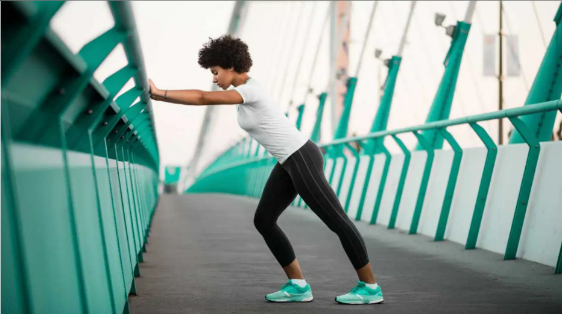

Reaching your weight loss goals can be a big challenge, regardless of how much weight you want to lose.
However, taking it one step at a time and making a few minor modifications to your diet and lifestyle can make weight loss much more manageable.
By making some small changes to your daily routine, you can safely lose up to 10 pounds (4.5 kg) in just one month, hitting your weight loss goals quickly and easily.
Here are 14 simple steps to drop 10 pounds in a single month.
1. Do More Cardio

Aerobic exercise — also known as cardio — is a type of physical activity that increases your heart rate to burn more calories and strengthen your heart and lungs.
Adding cardo to your routine is one of the most effective ways to quickly increase weight loss.
In fact, one study in 141 obese adults showed that combining 40 minutes of cardio three times per week with a weight loss diet decreased body weight by 9% over a six-month period (1).
Another 10-month study found that burning either 400 or 600 calories five times per week by doing cardio exercise exercise resulted in an average weight loss of 8.6 pounds (3.9 kg) and 11.5 pounds (5.2 kg), respectively (2).
For best results, try to fit in at least 20-40 minutes of cardio daily — or about 150-300 minutes per week (3).
Cutting down on carbs is another simple way to improve the quality of your diet and further weight loss.
It's especially beneficial to decrease your intake of refined carbs,which are a type of carbohydrate stripped of their nutrient and fiber content during processing.
Not only are refined carbs high in calories and low in nutrients, they're absorbed quickly into your bloodstream, causing blood sugar spikes and increased hunger.
(4. )
Studies show that a diet high in refined grains is associated with a higher body weight than a diet rich in nutritious whole grains .
One large study in 2,834 people also found that people who ate more refined grains had on average more belly fat than those who ate more whole grains.
For best results, swap out refined carbs like white bread, breakfast cereals and heavily processed pre-packaged foods for whole-grain products like quinoa, oats, brown rice and barley.
|Summary Refined carbs, which are low in nutrients.
Research shows that a higher
intake of refined carbs may be linked to higher body weight and increased belly
fat.
Our Fit It In challenge has the motivating workout videos and exercise advice you need to reach your New Year's goals. Join in via our Nutrition newsletter.
In order to lose weight, you need to use more calories than you consume, either by decreasing your calorie intake or increasing your daily physical activity.
Counting calories can keep you accountable and increases awareness of how your diet may impact your weight loss.
According to a review of 37 studies in over 16,000 people, weight loss regimens that incorporated calorie counting resulted in an average of 7.3 pounds (3.3 kg) more weight loss per year than those that didn't
However, keep in mind that cutting calories alone is not considered a sustainable strategy for long-term weight loss, so pair it with other diet and lifestyle modifications.
Recording your intake with an app or food journal is a good way to get started.
Soda, juice and energy drinks are often loaded with sugar and extra calories that can contribute to weight gain over time.
Conversely, water can help keep you feeling full and temporarily boost metabolism to cut calorie consumption and enhance weight loss.
One study in 24 overweight and obese adults showed that drinking 16.9 fluid ounces (500 ml) of water before a meal decreased the number of calories consumed by 13% compared to a control group.
Another small study in 14 people found that drinking 16.9 fluid ounces (500 ml) of water increased metabolism by 30% after 30-40 minutes, slightly increasing the number of calories burned for a short time.
To bump up weight loss, cut out high-calorie, sweetened beverages and aim to drink 34-68 fluid ounces (1-2 liters) of water throughout the day.
In order to lose weight, you need to use more calories than you consume, either by decreasing your calorie intake or increasing your daily physical activity.
However, keep in mind that cutting calories alone is not considered a sustainable strategy for long-term weight loss, so pair it with other diet and lifestyle modifications.
For best results, swap out refined carbs like white bread, breakfast cereals and heavily processed pre-packaged foods for whole-grain products like quinoa, oats, brown rice and barley.
Our Fit It In challenge has the motivating workout videos and exercise advice you need to reach your New Year's goals. Join in via our Nutrition newsletter.
5. Eat More Slowly
Slowing down and focusing on enjoying your food while listening to your body is an effective strategy to decrease intake and enhance feelings of fullness.
For example, one study in 30 women reported that eating slowly decreased calorie intake by an average of 10%, increased water consumption and resulted in greater feelings of fullness than eating quickly.
Another study showed that eating slowly increased levels of certain hormones in your body responsible for promoting fullness.
Taking smaller bites, drinking plenty of water with your meal and reducing external distractions can help you eat more slowly to increase weight loss.


.png)